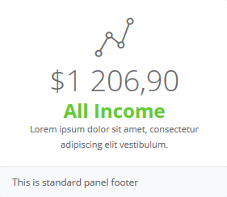
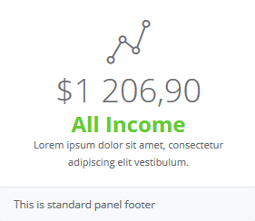

필요한 기능들만 쏙쏙 !!



Special Admin Theme for small and medium webapp with very clean and aesthetic style and feel.
필요한 기능들만 쏙쏙 !!

너무나 많아서 어리둥절 하시던분들, 이제는 쉽게 원하는 기능을 찾아보세요!
열심히 찾아서 사용하려했더니 , 복잡해서 어려우셨죠 ? 이제는 클릭몇번으로 쉽게 사용하세요!
테이블 + 테이블 + 테이블 ... 열심히 찾아 사용했더니 알아보기 힘든 데이터들, 이젠 좀더 쉽게 볼수있어요 !